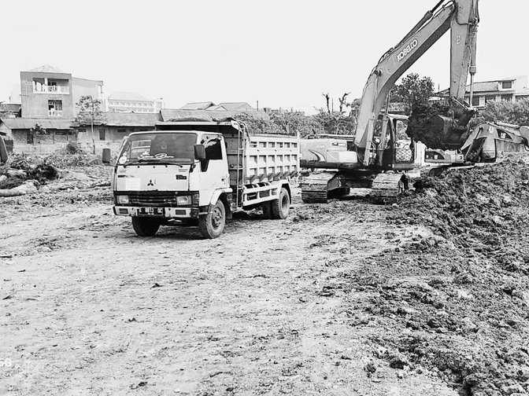
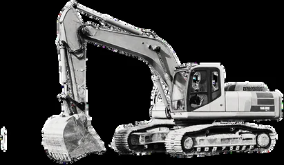
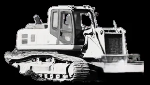
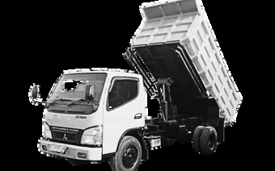

Hunian & Pagar
Pembangunan rumah tinggal, perumahan, dan pekerjaan pagar.
Layanan utama dan pendukung yang diuraikan dalam company profile CV Global Sinergi Nusantara.
Solusi pekerjaan bangunan sesuai fungsi dan kebutuhan, dari hunian pribadi hingga fasilitas bisnis serta pendidikan.

Pembangunan rumah tinggal, perumahan, dan pekerjaan pagar.
Gedung kantor, ruko, dan fasilitas komersial.
Konstruksi fasilitas industri dan pabrik.
Gedung serta fasilitas pendidikan.

Dukungan untuk kebutuhan pembangunan infrastruktur, akses proyek, dan persiapan lahan.
Layanan alat berat dan armada angkutan yang disebutkan dalam company profile, untuk mendukung pekerjaan lapangan.

Pekerjaan galian, pengurugan, dan penyiapan lahan.

Dukungan perataan dan penyiapan area proyek.

Angkutan tanah, material, serta peralatan proyek.
Ilustrasi alat mengikuti company profile; ketersediaan unit dan tarif dikonfirmasi langsung melalui tim GSN.
Menyediakan kebutuhan material konstruksi seperti semen, besi, bata, pasir, dan material finishing sebagaimana dijelaskan dalam company profile.
Minta Informasi Material